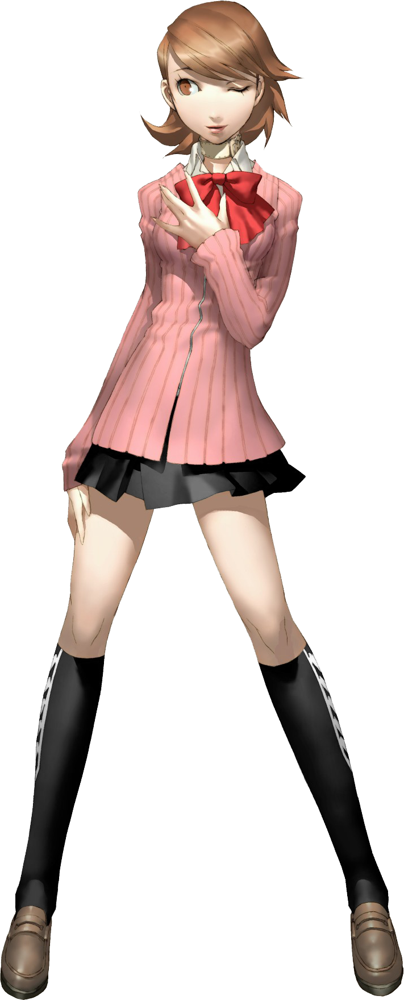
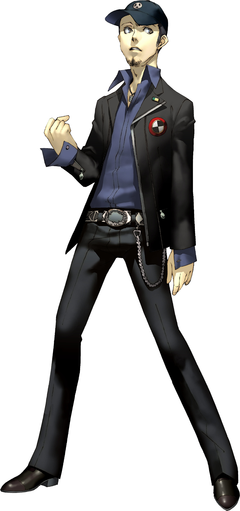
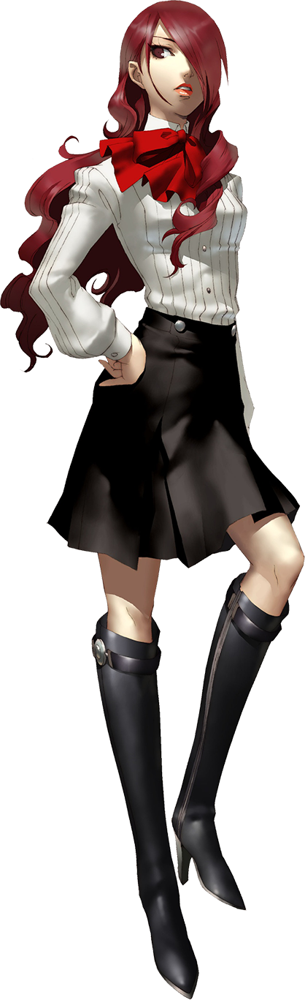
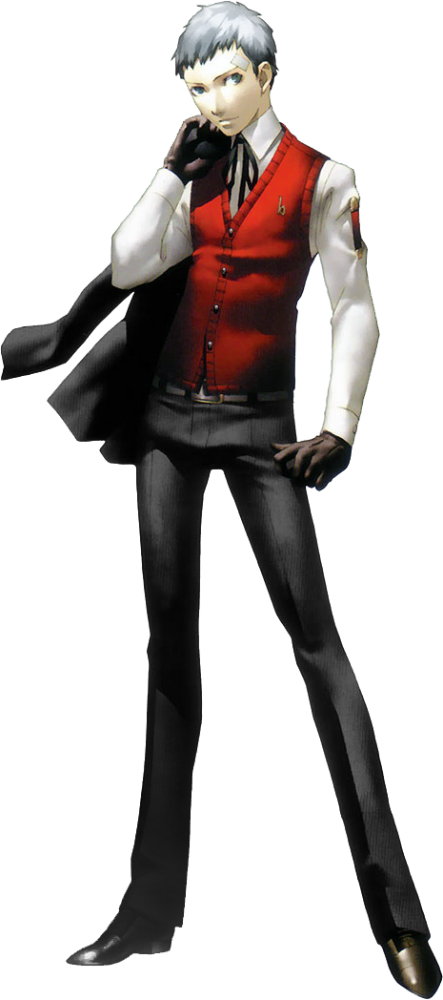
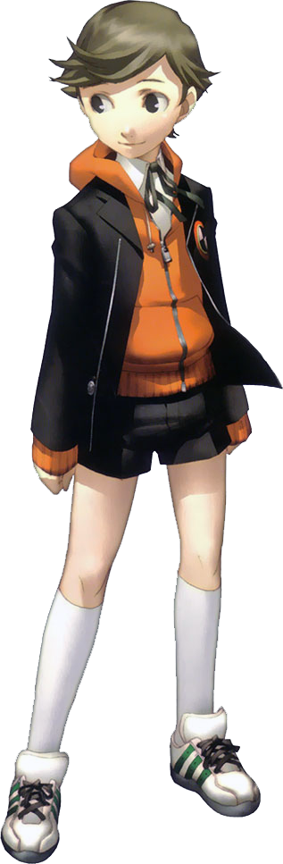
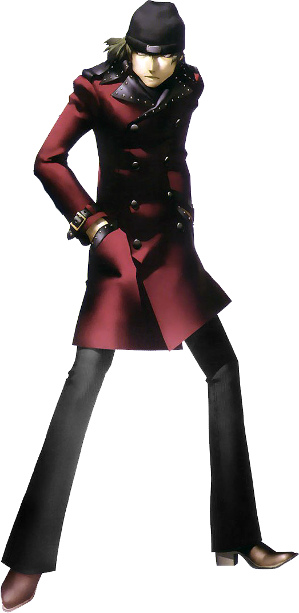

| Persona 3 | |
|---|---|

|
|
| Nome original: | ペルソナ3 |
| Ano de lançamento: | 2006 no Japão e 2007 no Ocidente |
| Plataforma(s): | PlayStation 2, PlayStation 3 e PlayStation Portable |
Persona 3
Persona 3 é o quarto jogo da série Persona. O jogo foi desenvolvido pela Atlus para o PlayStation 2.
Uma versão aprimorada do jogo contendo um epílogo chamado The Answer foi lançada como Persona 3 FES, também para o PlayStation 2. Esta versão está disponível na PlayStation Store para o PlayStation 3.
Uma versão portátil do Persona 3 original, adicionando uma protagonista feminina opcional e cenas do tipo visual novel, foi lançada como Persona 3 Portable para PlayStation Portable.
| Contents |
|---|
1. Plot
Persona 3 acompanha um grupo de alunos do ensino médio que buscam enfrentar, compreender e aceitar a morte em um mundo cercado pela mesma, bem como encontrar suas próprias razões para viver. Eles formam um grupo chamado SEES para investigar a Dark Hour, um misterioso período de tempo entre um dia e o outro que poucas pessoas conhecem. Durante a Dark Hour, a SEES explora o Tártaro, uma grande torre contendo sombras, criaturas que se alimentam da mente dos humanos. Para lutar contra as sombras, cada membro da SEES é capaz de invocar uma Persona, uma manifestação do seu eu interior.
2. Personagens








